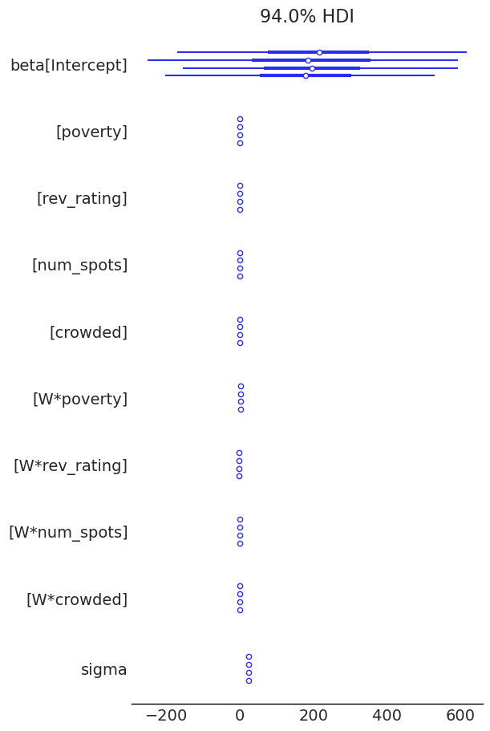
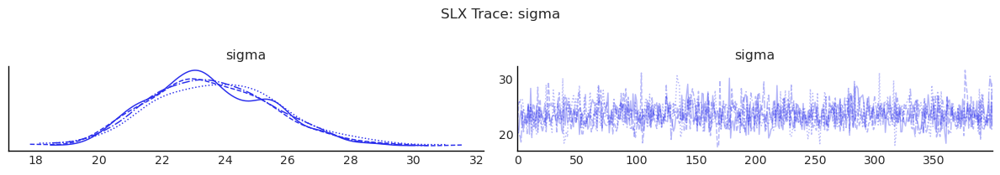
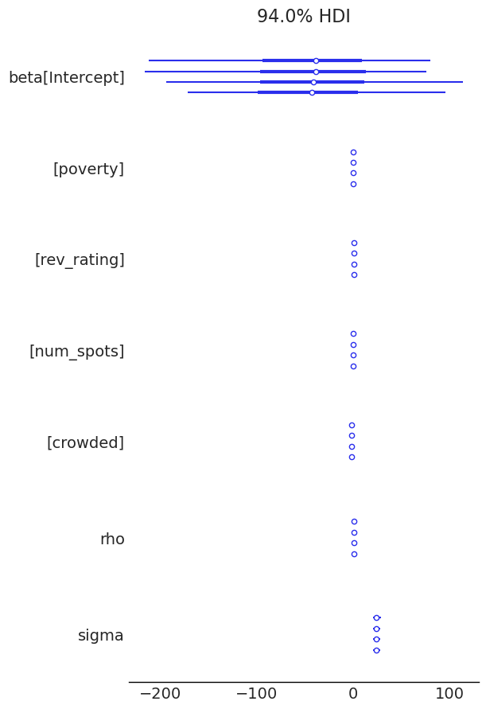
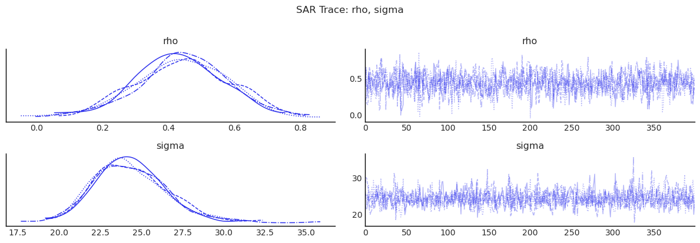
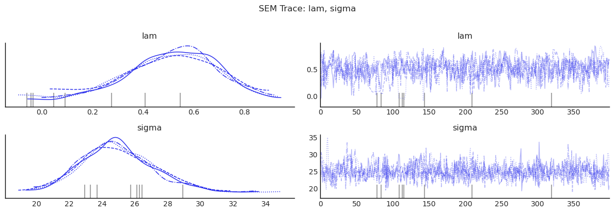
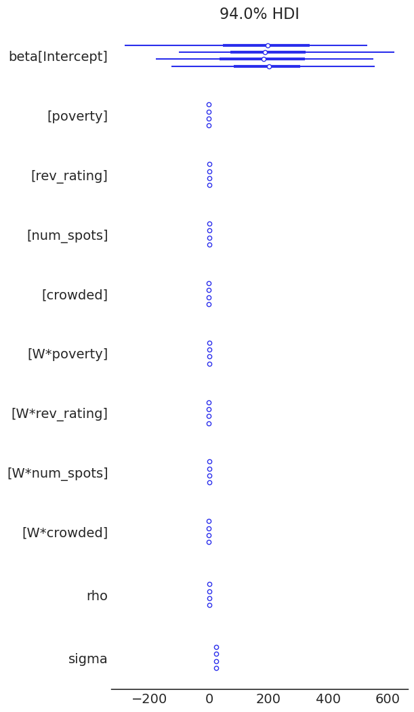
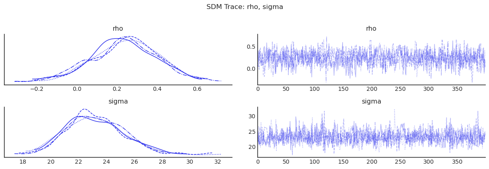
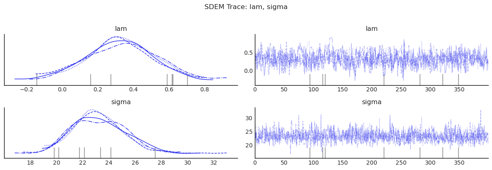

Bayesian Spatial Models: A Pedagogical Walkthrough¶
This notebook demonstrates all five models currently implemented in bayespecon:
SLX
SAR
SEM
SDM
SDEM
Each section explains the model idea, fits the model, and inspects posterior summaries and spatial effects.
Conceptual Roadmap¶
Let \(W\) denote the spatial weights matrix and \(WX\) the spatial lag of covariates.
SLX: \(y = X\beta + WX\theta + \epsilon\)
SAR: \(y = \rho Wy + X\beta + \epsilon\)
SEM: \(y = X\beta + u\), \(u = \lambda Wu + \epsilon\)
SDM: \(y = \rho Wy + X\beta + WX\theta + \epsilon\)
SDEM: \(y = X\beta + WX\theta + u\), \(u = \lambda Wu + \epsilon\)
In bayespecon, all models accept either:
formula mode:
model_class(formula=..., data=..., W=...), ormatrix mode:
model_class(y=..., X=..., W=...).
import arviz as az
import geodatasets
import geopandas as gpd
import numpy as np
import pandas as pd
from IPython.display import display
from libpysal.graph import Graph
from bayespecon import SLX, SAR, SEM, SDM, SDEM
az.style.use("arviz-white")
# Load sample spatial dataset
gdf = gpd.read_file(geodatasets.data.geoda.airbnb.url)
xcols = ["poverty", "rev_rating", "num_spots", "crowded"]
ycol = "price_pp"
gdf = gdf.dropna(subset=xcols + [ycol]).copy()
# Build contiguity graph (queen)
W = Graph.build_contiguity(gdf, rook=False).transform('r')
print(f"Observations: {len(gdf)}")
print(f"Predictors: {xcols}")
Observations: 67
Predictors: ['poverty', 'rev_rating', 'num_spots', 'crowded']
Helper Functions¶
To keep each model section focused, we use utility functions to:
fit with consistent MCMC settings,
print posterior summaries,
tabulate direct/indirect/total effects.
For a quick pedagogical run, we use small draw counts. Increase these for real inference.
def fit_and_report(model_cls, formula, data, W, draws=400, tune=400, chains=4, seed=42):
model = model_cls(
formula=formula,
data=data,
W=W,
logdet_method="eigenvalue",
)
idata = model.fit(
draws=draws,
tune=tune,
chains=chains,
target_accept=0.9,
random_seed=seed,
progressbar=False,
idata_kwargs={"log_likelihood": True},
)
summary = model.summary(round_to=3)
effects = model.spatial_effects()
effects_df = pd.DataFrame({
"feature": effects["feature_names"],
"direct": effects["direct"],
"indirect": effects["indirect"],
"total": effects["total"],
})
return model, idata, summary, effects_df
Convergence Diagnostics Helper¶
For each fitted model, we will inspect:
r_hat(target close to 1.00)effective sample sizes (
ess_bulk,ess_tail)trace plots for key parameters.
import matplotlib.pyplot as plt
def diagnostics_table(idata, var_names):
cols = ["mean", "sd", "ess_bulk", "ess_tail", "r_hat"]
return az.summary(idata, var_names=var_names, round_to=3)[cols]
def show_trace(idata, var_names, title):
az.plot_trace(idata, var_names=var_names)
plt.suptitle(title, y=1.02)
plt.tight_layout()
plt.show()
1) SLX: Spatially Lagged Covariates Only¶
Model:
Interpretation:
betacaptures local covariate effects.thetacaptures neighbor-covariate spillovers.No spatial lag on \(y\), so no autoregressive propagation through outcomes.
slx, idata_slx, summary_slx, effects_slx = fit_and_report(
SLX,
formula="price_pp ~ poverty + rev_rating + num_spots + crowded",
data=gdf,
W=W,
)
display(summary_slx)
display(effects_slx)
Initializing NUTS using jitter+adapt_diag...
Multiprocess sampling (4 chains in 2 jobs)
NUTS: [beta, sigma]
/home/runner/micromamba/envs/test/lib/python3.14/site-packages/pymc/step_methods/hmc/quadpotential.py:316: RuntimeWarning: overflow encountered in dot
return 0.5 * np.dot(x, v_out)
Sampling 4 chains for 400 tune and 400 draw iterations (1_600 + 1_600 draws total) took 30 seconds.
| mean | sd | hdi_3% | hdi_97% | mcse_mean | mcse_sd | ess_bulk | ess_tail | r_hat | |
|---|---|---|---|---|---|---|---|---|---|
| Intercept | 189.574 | 210.163 | -167.015 | 627.688 | 8.939 | 6.045 | 552.011 | 683.690 | 1.007 |
| poverty | -0.675 | 0.455 | -1.527 | 0.168 | 0.015 | 0.010 | 946.699 | 1202.923 | 1.001 |
| rev_rating | 0.343 | 0.889 | -1.261 | 2.019 | 0.030 | 0.022 | 858.478 | 995.480 | 1.002 |
| num_spots | 0.021 | 0.030 | -0.037 | 0.074 | 0.001 | 0.001 | 1059.799 | 938.293 | 1.005 |
| crowded | -1.030 | 1.165 | -3.224 | 1.098 | 0.036 | 0.024 | 1025.749 | 1059.615 | 1.000 |
| W*poverty | 1.183 | 0.668 | -0.014 | 2.446 | 0.028 | 0.018 | 598.411 | 832.256 | 1.006 |
| W*rev_rating | -1.763 | 1.814 | -5.026 | 1.749 | 0.072 | 0.048 | 639.098 | 768.137 | 1.005 |
| W*num_spots | 0.201 | 0.046 | 0.122 | 0.288 | 0.001 | 0.001 | 1041.499 | 1223.241 | 1.003 |
| W*crowded | -1.435 | 1.572 | -4.655 | 1.306 | 0.053 | 0.035 | 881.426 | 1109.505 | 1.003 |
| sigma | 23.648 | 2.047 | 20.086 | 27.515 | 0.062 | 0.052 | 1098.255 | 1117.649 | 1.001 |
| feature | direct | indirect | total | |
|---|---|---|---|---|
| 0 | poverty | -0.674834 | 1.183429 | 0.508595 |
| 1 | rev_rating | 0.342909 | -1.762965 | -1.420056 |
| 2 | num_spots | 0.020759 | 0.201125 | 0.221883 |
| 3 | crowded | -1.029607 | -1.434761 | -2.464368 |
az.plot_forest(idata_slx)
display(diagnostics_table(idata_slx, ["beta", "sigma"]))
show_trace(idata_slx, ["sigma"], "SLX Trace: sigma")
| mean | sd | ess_bulk | ess_tail | r_hat | |
|---|---|---|---|---|---|
| beta[Intercept] | 189.574 | 210.163 | 552.011 | 683.690 | 1.007 |
| beta[poverty] | -0.675 | 0.455 | 946.699 | 1202.923 | 1.001 |
| beta[rev_rating] | 0.343 | 0.889 | 858.478 | 995.480 | 1.002 |
| beta[num_spots] | 0.021 | 0.030 | 1059.799 | 938.293 | 1.005 |
| beta[crowded] | -1.030 | 1.165 | 1025.749 | 1059.615 | 1.000 |
| beta[W*poverty] | 1.183 | 0.668 | 598.411 | 832.256 | 1.006 |
| beta[W*rev_rating] | -1.763 | 1.814 | 639.098 | 768.137 | 1.005 |
| beta[W*num_spots] | 0.201 | 0.046 | 1041.499 | 1223.241 | 1.003 |
| beta[W*crowded] | -1.435 | 1.572 | 881.426 | 1109.505 | 1.003 |
| sigma | 23.648 | 2.047 | 1098.255 | 1117.649 | 1.001 |
/tmp/ipykernel_6474/3308626596.py:12: UserWarning: The figure layout has changed to tight
plt.tight_layout()


2) SAR: Spatial Lag of Outcome¶
Model:
Interpretation:
\(\rho\) controls feedback from neighboring outcomes.
Effects are amplified through \((I - \rho W)^{-1}\), so direct and indirect impacts differ from raw \(\beta\).
sar, idata_sar, summary_sar, effects_sar = fit_and_report(
SAR,
formula="price_pp ~ poverty + rev_rating + num_spots + crowded",
data=gdf,
W=W,
)
display(summary_sar)
display(effects_sar)
Initializing NUTS using jitter+adapt_diag...
Multiprocess sampling (4 chains in 2 jobs)
NUTS: [rho, beta, sigma]
/home/runner/micromamba/envs/test/lib/python3.14/site-packages/pymc/step_methods/hmc/quadpotential.py:316: RuntimeWarning: overflow encountered in dot
return 0.5 * np.dot(x, v_out)
/home/runner/micromamba/envs/test/lib/python3.14/site-packages/pymc/step_methods/hmc/quadpotential.py:316: RuntimeWarning: overflow encountered in dot
return 0.5 * np.dot(x, v_out)
Sampling 4 chains for 400 tune and 400 draw iterations (1_600 + 1_600 draws total) took 20 seconds.
| mean | sd | hdi_3% | hdi_97% | mcse_mean | mcse_sd | ess_bulk | ess_tail | r_hat | |
|---|---|---|---|---|---|---|---|---|---|
| Intercept | -43.650 | 78.768 | -200.765 | 95.548 | 2.883 | 2.184 | 745.206 | 897.104 | 1.006 |
| poverty | 0.100 | 0.316 | -0.488 | 0.677 | 0.010 | 0.009 | 1064.785 | 1027.666 | 1.005 |
| rev_rating | 0.913 | 0.825 | -0.453 | 2.611 | 0.031 | 0.022 | 715.441 | 932.399 | 1.006 |
| num_spots | 0.077 | 0.025 | 0.030 | 0.126 | 0.001 | 0.001 | 1296.118 | 1029.851 | 1.002 |
| crowded | -1.748 | 0.860 | -3.493 | -0.265 | 0.024 | 0.021 | 1290.005 | 1084.390 | 1.002 |
| rho | 0.439 | 0.140 | 0.170 | 0.694 | 0.004 | 0.004 | 1251.185 | 938.602 | 1.009 |
| sigma | 24.315 | 2.152 | 20.449 | 28.357 | 0.062 | 0.059 | 1193.522 | 1006.979 | 1.001 |
| feature | direct | indirect | total | |
|---|---|---|---|---|
| 0 | Intercept | -45.966610 | -31.787402 | -77.754013 |
| 1 | poverty | 0.105276 | 0.072802 | 0.178078 |
| 2 | rev_rating | 0.961842 | 0.665145 | 1.626987 |
| 3 | num_spots | 0.080965 | 0.055990 | 0.136955 |
| 4 | crowded | -1.841092 | -1.273175 | -3.114267 |
az.plot_forest(idata_sar)
display(diagnostics_table(idata_sar, ["rho", "beta", "sigma"]))
show_trace(idata_sar, ["rho", "sigma"], "SAR Trace: rho, sigma")
| mean | sd | ess_bulk | ess_tail | r_hat | |
|---|---|---|---|---|---|
| rho | 0.439 | 0.140 | 1251.185 | 938.602 | 1.009 |
| beta[Intercept] | -43.650 | 78.768 | 745.206 | 897.104 | 1.006 |
| beta[poverty] | 0.100 | 0.316 | 1064.785 | 1027.666 | 1.005 |
| beta[rev_rating] | 0.913 | 0.825 | 715.441 | 932.399 | 1.006 |
| beta[num_spots] | 0.077 | 0.025 | 1296.118 | 1029.851 | 1.002 |
| beta[crowded] | -1.748 | 0.860 | 1290.005 | 1084.390 | 1.002 |
| sigma | 24.315 | 2.152 | 1193.522 | 1006.979 | 1.001 |
/tmp/ipykernel_6474/3308626596.py:12: UserWarning: The figure layout has changed to tight
plt.tight_layout()


3) SEM: Spatial Correlation in Errors¶
Model:
Interpretation:
Spatial dependence is moved to latent shocks rather than outcome feedback.
Useful when omitted spatial factors induce correlated residuals.
sem, idata_sem, summary_sem, effects_sem = fit_and_report(
SEM,
formula="price_pp ~ poverty + rev_rating + num_spots + crowded",
data=gdf,
W=W,
)
display(summary_sem)
display(effects_sem)
Initializing NUTS using jitter+adapt_diag...
Multiprocess sampling (4 chains in 2 jobs)
NUTS: [lam, beta, sigma]
/home/runner/micromamba/envs/test/lib/python3.14/site-packages/pymc/step_methods/hmc/quadpotential.py:316: RuntimeWarning: overflow encountered in dot
return 0.5 * np.dot(x, v_out)
/home/runner/micromamba/envs/test/lib/python3.14/site-packages/pymc/step_methods/hmc/quadpotential.py:316: RuntimeWarning: overflow encountered in dot
return 0.5 * np.dot(x, v_out)
Sampling 4 chains for 400 tune and 400 draw iterations (1_600 + 1_600 draws total) took 16 seconds.
There were 8 divergences after tuning. Increase `target_accept` or reparameterize.
| mean | sd | hdi_3% | hdi_97% | mcse_mean | mcse_sd | ess_bulk | ess_tail | r_hat | |
|---|---|---|---|---|---|---|---|---|---|
| Intercept | -25.898 | 78.761 | -168.289 | 119.014 | 3.499 | 2.665 | 514.773 | 532.841 | 1.005 |
| poverty | -0.130 | 0.443 | -1.031 | 0.634 | 0.014 | 0.011 | 966.094 | 1214.679 | 1.001 |
| rev_rating | 1.111 | 0.839 | -0.493 | 2.598 | 0.038 | 0.029 | 509.233 | 456.981 | 1.006 |
| num_spots | 0.072 | 0.035 | 0.009 | 0.137 | 0.001 | 0.001 | 726.381 | 684.712 | 1.003 |
| crowded | -1.838 | 1.110 | -3.860 | 0.278 | 0.032 | 0.028 | 1215.646 | 1076.667 | 1.001 |
| lam | 0.509 | 0.183 | 0.172 | 0.861 | 0.008 | 0.007 | 554.812 | 277.570 | 1.003 |
| sigma | 24.989 | 2.228 | 21.178 | 29.582 | 0.066 | 0.066 | 1162.391 | 996.848 | 1.003 |
| feature | direct | indirect | total | |
|---|---|---|---|---|
| 0 | Intercept | -25.897833 | 0.0 | -25.897833 |
| 1 | poverty | -0.129780 | 0.0 | -0.129780 |
| 2 | rev_rating | 1.111085 | 0.0 | 1.111085 |
| 3 | num_spots | 0.071510 | 0.0 | 0.071510 |
| 4 | crowded | -1.838412 | 0.0 | -1.838412 |
display(diagnostics_table(idata_sem, ["lam", "beta", "sigma"]))
show_trace(idata_sem, ["lam", "sigma"], "SEM Trace: lam, sigma")
| mean | sd | ess_bulk | ess_tail | r_hat | |
|---|---|---|---|---|---|
| lam | 0.509 | 0.183 | 554.812 | 277.570 | 1.003 |
| beta[Intercept] | -25.898 | 78.761 | 514.773 | 532.841 | 1.005 |
| beta[poverty] | -0.130 | 0.443 | 966.094 | 1214.679 | 1.001 |
| beta[rev_rating] | 1.111 | 0.839 | 509.233 | 456.981 | 1.006 |
| beta[num_spots] | 0.072 | 0.035 | 726.381 | 684.712 | 1.003 |
| beta[crowded] | -1.838 | 1.110 | 1215.646 | 1076.667 | 1.001 |
| sigma | 24.989 | 2.228 | 1162.391 | 996.848 | 1.003 |
/tmp/ipykernel_6474/3308626596.py:12: UserWarning: The figure layout has changed to tight
plt.tight_layout()

4) SDM: SAR + SLX¶
Model:
Interpretation:
Includes both outcome feedback and neighbor-covariate channels.
Often used as a flexible nesting model for SAR/SLX.
sdm, idata_sdm, summary_sdm, effects_sdm = fit_and_report(
SDM,
formula="price_pp ~ poverty + rev_rating + num_spots + crowded",
data=gdf,
W=W,
)
display(summary_sdm)
display(effects_sdm)
Initializing NUTS using jitter+adapt_diag...
Multiprocess sampling (4 chains in 2 jobs)
NUTS: [rho, beta, sigma]
/home/runner/micromamba/envs/test/lib/python3.14/site-packages/pymc/step_methods/hmc/quadpotential.py:316: RuntimeWarning: overflow encountered in dot
return 0.5 * np.dot(x, v_out)
/home/runner/micromamba/envs/test/lib/python3.14/site-packages/pymc/step_methods/hmc/quadpotential.py:316: RuntimeWarning: overflow encountered in dot
return 0.5 * np.dot(x, v_out)
Sampling 4 chains for 400 tune and 400 draw iterations (1_600 + 1_600 draws total) took 34 seconds.
| mean | sd | hdi_3% | hdi_97% | mcse_mean | mcse_sd | ess_bulk | ess_tail | r_hat | |
|---|---|---|---|---|---|---|---|---|---|
| Intercept | 192.602 | 197.311 | -194.214 | 552.073 | 7.174 | 5.346 | 752.245 | 825.749 | 1.005 |
| poverty | -0.691 | 0.431 | -1.515 | 0.119 | 0.013 | 0.011 | 1083.248 | 1085.405 | 1.003 |
| rev_rating | 0.409 | 0.855 | -1.095 | 2.154 | 0.025 | 0.022 | 1141.296 | 993.185 | 1.003 |
| num_spots | 0.016 | 0.031 | -0.043 | 0.072 | 0.001 | 0.001 | 1165.213 | 1244.267 | 1.007 |
| crowded | -1.035 | 1.144 | -3.073 | 1.183 | 0.035 | 0.025 | 1082.196 | 1244.503 | 1.002 |
| W*poverty | 1.023 | 0.651 | -0.209 | 2.210 | 0.022 | 0.014 | 871.928 | 1166.753 | 1.001 |
| W*rev_rating | -2.006 | 1.767 | -5.350 | 1.148 | 0.060 | 0.043 | 868.648 | 889.136 | 1.003 |
| W*num_spots | 0.166 | 0.050 | 0.074 | 0.261 | 0.002 | 0.001 | 872.363 | 1196.654 | 1.004 |
| W*crowded | -0.934 | 1.706 | -4.007 | 2.152 | 0.053 | 0.038 | 1040.296 | 1225.345 | 1.002 |
| rho | 0.239 | 0.162 | -0.062 | 0.551 | 0.005 | 0.004 | 1275.488 | 1187.169 | 1.002 |
| sigma | 23.187 | 2.055 | 19.475 | 26.918 | 0.055 | 0.055 | 1392.929 | 1066.343 | 0.999 |
| feature | direct | indirect | total | |
|---|---|---|---|---|
| 0 | poverty | -0.641021 | 1.077593 | 0.436572 |
| 1 | rev_rating | 0.298605 | -2.398687 | -2.100081 |
| 2 | num_spots | 0.026245 | 0.213668 | 0.239914 |
| 3 | crowded | -1.103543 | -1.485779 | -2.589322 |
az.plot_forest(idata_sdm)
display(diagnostics_table(idata_sdm, ["rho", "beta", "sigma"]))
show_trace(idata_sdm, ["rho", "sigma"], "SDM Trace: rho, sigma")
| mean | sd | ess_bulk | ess_tail | r_hat | |
|---|---|---|---|---|---|
| rho | 0.239 | 0.162 | 1275.488 | 1187.169 | 1.002 |
| beta[Intercept] | 192.602 | 197.311 | 752.245 | 825.749 | 1.005 |
| beta[poverty] | -0.691 | 0.431 | 1083.248 | 1085.405 | 1.003 |
| beta[rev_rating] | 0.409 | 0.855 | 1141.296 | 993.185 | 1.003 |
| beta[num_spots] | 0.016 | 0.031 | 1165.213 | 1244.267 | 1.007 |
| beta[crowded] | -1.035 | 1.144 | 1082.196 | 1244.503 | 1.002 |
| beta[W*poverty] | 1.023 | 0.651 | 871.928 | 1166.753 | 1.001 |
| beta[W*rev_rating] | -2.006 | 1.767 | 868.648 | 889.136 | 1.003 |
| beta[W*num_spots] | 0.166 | 0.050 | 872.363 | 1196.654 | 1.004 |
| beta[W*crowded] | -0.934 | 1.706 | 1040.296 | 1225.345 | 1.002 |
| sigma | 23.187 | 2.055 | 1392.929 | 1066.343 | 0.999 |
/tmp/ipykernel_6474/3308626596.py:12: UserWarning: The figure layout has changed to tight
plt.tight_layout()


5) SDEM: SLX + Spatial Error¶
Model:
Interpretation:
Neighbor covariates matter directly (through \(WX\)),
and unmodeled shocks are spatially correlated (through \(u\)).
sdem, idata_sdem, summary_sdem, effects_sdem = fit_and_report(
SDEM,
formula="price_pp ~ poverty + rev_rating + num_spots + crowded",
data=gdf,
W=W,
)
display(summary_sdem)
display(effects_sdem)
Initializing NUTS using jitter+adapt_diag...
Multiprocess sampling (4 chains in 2 jobs)
NUTS: [lam, beta, sigma]
/home/runner/micromamba/envs/test/lib/python3.14/site-packages/pymc/step_methods/hmc/quadpotential.py:316: RuntimeWarning: overflow encountered in dot
return 0.5 * np.dot(x, v_out)
/home/runner/micromamba/envs/test/lib/python3.14/site-packages/pymc/step_methods/hmc/quadpotential.py:316: RuntimeWarning: overflow encountered in dot
return 0.5 * np.dot(x, v_out)
Sampling 4 chains for 400 tune and 400 draw iterations (1_600 + 1_600 draws total) took 32 seconds.
There were 7 divergences after tuning. Increase `target_accept` or reparameterize.
| mean | sd | hdi_3% | hdi_97% | mcse_mean | mcse_sd | ess_bulk | ess_tail | r_hat | |
|---|---|---|---|---|---|---|---|---|---|
| Intercept | 251.883 | 228.824 | -180.031 | 658.387 | 9.778 | 6.910 | 546.205 | 844.530 | 1.003 |
| poverty | -0.657 | 0.438 | -1.433 | 0.210 | 0.015 | 0.012 | 835.900 | 883.571 | 1.002 |
| rev_rating | 0.265 | 0.937 | -1.330 | 2.182 | 0.032 | 0.021 | 876.250 | 883.847 | 1.000 |
| num_spots | 0.027 | 0.030 | -0.033 | 0.083 | 0.001 | 0.001 | 927.948 | 949.827 | 1.000 |
| crowded | -1.063 | 1.088 | -3.217 | 0.872 | 0.032 | 0.026 | 1111.430 | 1233.770 | 1.002 |
| W*poverty | 0.992 | 0.705 | -0.274 | 2.346 | 0.024 | 0.015 | 893.311 | 1119.110 | 1.003 |
| W*rev_rating | -2.301 | 1.824 | -5.747 | 0.993 | 0.073 | 0.053 | 619.426 | 882.506 | 1.001 |
| W*num_spots | 0.188 | 0.049 | 0.098 | 0.280 | 0.002 | 0.001 | 1040.867 | 917.251 | 1.000 |
| W*crowded | -1.673 | 1.802 | -5.170 | 1.602 | 0.050 | 0.045 | 1278.049 | 1071.784 | 1.004 |
| lam | 0.328 | 0.186 | -0.013 | 0.687 | 0.006 | 0.005 | 862.536 | 911.323 | 1.007 |
| sigma | 23.236 | 1.981 | 19.514 | 26.774 | 0.051 | 0.051 | 1522.447 | 1240.825 | 1.003 |
| feature | direct | indirect | total | |
|---|---|---|---|---|
| 0 | poverty | -0.657320 | 0.992134 | 0.334814 |
| 1 | rev_rating | 0.264837 | -2.300681 | -2.035844 |
| 2 | num_spots | 0.027076 | 0.188380 | 0.215457 |
| 3 | crowded | -1.062503 | -1.672535 | -2.735037 |
display(diagnostics_table(idata_sdem, ["lam", "beta", "sigma"]))
show_trace(idata_sdem, ["lam", "sigma"], "SDEM Trace: lam, sigma")
| mean | sd | ess_bulk | ess_tail | r_hat | |
|---|---|---|---|---|---|
| lam | 0.328 | 0.186 | 862.536 | 911.323 | 1.007 |
| beta[Intercept] | 251.883 | 228.824 | 546.205 | 844.530 | 1.003 |
| beta[poverty] | -0.657 | 0.438 | 835.900 | 883.571 | 1.002 |
| beta[rev_rating] | 0.265 | 0.937 | 876.250 | 883.847 | 1.000 |
| beta[num_spots] | 0.027 | 0.030 | 927.948 | 949.827 | 1.000 |
| beta[crowded] | -1.063 | 1.088 | 1111.430 | 1233.770 | 1.002 |
| beta[W*poverty] | 0.992 | 0.705 | 893.311 | 1119.110 | 1.003 |
| beta[W*rev_rating] | -2.301 | 1.824 | 619.426 | 882.506 | 1.001 |
| beta[W*num_spots] | 0.188 | 0.049 | 1040.867 | 917.251 | 1.000 |
| beta[W*crowded] | -1.673 | 1.802 | 1278.049 | 1071.784 | 1.004 |
| sigma | 23.236 | 1.981 | 1522.447 | 1240.825 | 1.003 |
/tmp/ipykernel_6474/3308626596.py:12: UserWarning: The figure layout has changed to tight
plt.tight_layout()

Spatial Specification Diagnostics (New API)¶
The model classes now expose dedicated specification diagnostics that return a structured DiagnosticResult object.
Below we run each model’s spatial_specification_tests() battery and tabulate:
test name
statistic
p-value
any extra test-specific metadata
def diagnostic_to_row(result):
row = {
"diagnostic": result.name,
"statistic": float(result.statistic),
"pvalue": float(result.pvalue),
}
if result.extra:
for k, v in result.extra.items():
row[k] = float(v) if isinstance(v, (int, float, np.number)) else v
return row
spec_models = {
"SLX": slx,
"SAR": sar,
"SEM": sem,
"SDM": sdm,
"SDEM": sdem,
}
spec_tables = {}
for model_name, model_obj in spec_models.items():
tests = model_obj.spatial_specification_tests()
table = pd.DataFrame([diagnostic_to_row(dr) for dr in tests.values()])
spec_tables[model_name] = table.sort_values("diagnostic").reset_index(drop=True)
for model_name, table in spec_tables.items():
print(model_name)
display(table)
print()
SLX
SAR
SEM
SDM
SDEM
| diagnostic | statistic | pvalue | istat | imean | ivar | |
|---|---|---|---|---|---|---|
| 0 | lm_error | 2.070013 | 0.150220 | NaN | NaN | NaN |
| 1 | lm_lag | 7.846885 | 0.005091 | NaN | NaN | NaN |
| 2 | moran | 0.121793 | 0.042568 | 2.027922 | -0.039648 | 0.006338 |
| diagnostic | statistic | pvalue | istat | imean | ivar | |
|---|---|---|---|---|---|---|
| 0 | lm_error | 2.070013e+00 | 0.150220 | NaN | NaN | NaN |
| 1 | lm_rho | 6.719408e+00 | 0.009537 | NaN | NaN | NaN |
| 2 | lm_rho_robust | 3.751420e+06 | 0.000000 | NaN | NaN | NaN |
| 3 | moran | 1.217933e-01 | 0.042568 | 2.027922 | -0.039648 | 0.006338 |
| diagnostic | statistic | pvalue | istat | imean | ivar | |
|---|---|---|---|---|---|---|
| 0 | lm_lag | 7.846885 | 0.005091 | NaN | NaN | NaN |
| 1 | lr_ratio | 3.686049 | 0.054869 | NaN | NaN | NaN |
| 2 | moran | 0.121793 | 0.042568 | 2.027922 | -0.039648 | 0.006338 |
| 3 | wald_error | 10.681677 | 0.001082 | NaN | NaN | NaN |
| diagnostic | statistic | pvalue | istat | imean | ivar | |
|---|---|---|---|---|---|---|
| 0 | lm_error | 2.070013e+00 | 0.150220 | NaN | NaN | NaN |
| 1 | lm_rho | 6.719408e+00 | 0.009537 | NaN | NaN | NaN |
| 2 | lm_rho_robust | 3.751420e+06 | 0.000000 | NaN | NaN | NaN |
| 3 | moran | 1.217933e-01 | 0.042568 | 2.027922 | -0.039648 | 0.006338 |
| diagnostic | statistic | pvalue | istat | imean | ivar | |
|---|---|---|---|---|---|---|
| 0 | lm_lag | 7.846885 | 0.005091 | NaN | NaN | NaN |
| 1 | moran | 0.121793 | 0.042568 | 2.027922 | -0.039648 | 0.006338 |
| 2 | wald_error | 10.681677 | 0.001082 | NaN | NaN | NaN |
Compare Spatial Parameters Across Models¶
This cell compares posterior means/intervals for the spatial scalar where present:
rhoin SAR/SDMlamin SEM/SDEM
def pull_scalar(idata, var_name):
if var_name not in idata.posterior:
return None
vals = idata.posterior[var_name].values.reshape(-1)
return {
"mean": float(np.mean(vals)),
"sd": float(np.std(vals)),
"hdi_3%": float(np.quantile(vals, 0.03)),
"hdi_97%": float(np.quantile(vals, 0.97)),
}
rows = []
for name, idata, var in [
("SAR", idata_sar, "rho"),
("SEM", idata_sem, "lam"),
("SDM", idata_sdm, "rho"),
("SDEM", idata_sdem, "lam"),
]:
stats = pull_scalar(idata, var)
stats["model"] = name
stats["parameter"] = var
rows.append(stats)
spatial_param_table = pd.DataFrame(rows)[["model", "parameter", "mean", "sd", "hdi_3%", "hdi_97%"]]
display(spatial_param_table)
| model | parameter | mean | sd | hdi_3% | hdi_97% | |
|---|---|---|---|---|---|---|
| 0 | SAR | rho | 0.438613 | 0.139854 | 0.165298 | 0.690116 |
| 1 | SEM | lam | 0.508609 | 0.183146 | 0.120760 | 0.822417 |
| 2 | SDM | rho | 0.239389 | 0.162165 | -0.079836 | 0.535577 |
| 3 | SDEM | lam | 0.327971 | 0.186286 | -0.028236 | 0.671812 |
Model Comparison: WAIC and LOO¶
We compare fitted models using information criteria from ArviZ. Lower values are better on these scales.
Notes:
These comparisons are only meaningful when models are fit to the same data.
For robust results, increase
drawsandtunebeyond this pedagogical setup.Some model formulations may not expose pointwise
log_likelihood; those are skipped in the joint comparison and still reported in per-model attempts.
idata_dict = {
"SLX": idata_slx,
"SAR": idata_sar,
"SEM": idata_sem,
"SDM": idata_sdm,
"SDEM": idata_sdem,
}
def _has_loglik(idata):
if "log_likelihood" not in idata.groups():
return False
return len(list(idata.log_likelihood.data_vars)) > 0
valid_for_compare = {name: idata for name, idata in idata_dict.items() if _has_loglik(idata)}
missing_loglik = [name for name, idata in idata_dict.items() if not _has_loglik(idata)]
if missing_loglik:
print("Skipped (no log_likelihood group):", ", ".join(missing_loglik))
if len(valid_for_compare) < 2:
print("Need at least two models with valid log_likelihood for WAIC/LOO compare.")
else:
for ic in ("waic", "loo"):
try:
cmp = az.compare(valid_for_compare, ic=ic, method="BB-pseudo-BMA")
print(f"{ic.upper()} comparison")
display(cmp)
except Exception as e:
print(f"{ic.upper()} comparison not available: {type(e).__name__}: {e}")
# Always provide per-model IC attempts so the cell remains informative.
rows = []
for name, idata in idata_dict.items():
row = {"model": name}
try:
waic_res = az.waic(idata)
row["elpd_waic"] = float(waic_res.elpd_waic)
row["p_waic"] = float(waic_res.p_waic)
except Exception as e:
row["elpd_waic"] = np.nan
row["p_waic"] = np.nan
row["waic_error"] = str(e).split("\n", 1)[0]
try:
loo_res = az.loo(idata)
row["elpd_loo"] = float(loo_res.elpd_loo)
row["p_loo"] = float(loo_res.p_loo)
except Exception as e:
row["elpd_loo"] = np.nan
row["p_loo"] = np.nan
row["loo_error"] = str(e).split("\n", 1)[0]
rows.append(row)
ic_table = pd.DataFrame(rows).sort_values("model").reset_index(drop=True)
display(ic_table)
Skipped (no log_likelihood group): SEM, SDEM
WAIC comparison
LOO comparison
/home/runner/micromamba/envs/test/lib/python3.14/site-packages/arviz/stats/stats.py:1652: UserWarning: For one or more samples the posterior variance of the log predictive densities exceeds 0.4. This could be indication of WAIC starting to fail.
See http://arxiv.org/abs/1507.04544 for details
warnings.warn(
/home/runner/micromamba/envs/test/lib/python3.14/site-packages/arviz/stats/stats.py:1652: UserWarning: For one or more samples the posterior variance of the log predictive densities exceeds 0.4. This could be indication of WAIC starting to fail.
See http://arxiv.org/abs/1507.04544 for details
warnings.warn(
/home/runner/micromamba/envs/test/lib/python3.14/site-packages/arviz/stats/stats.py:1652: UserWarning: For one or more samples the posterior variance of the log predictive densities exceeds 0.4. This could be indication of WAIC starting to fail.
See http://arxiv.org/abs/1507.04544 for details
warnings.warn(
/home/runner/micromamba/envs/test/lib/python3.14/site-packages/arviz/stats/stats.py:1652: UserWarning: For one or more samples the posterior variance of the log predictive densities exceeds 0.4. This could be indication of WAIC starting to fail.
See http://arxiv.org/abs/1507.04544 for details
warnings.warn(
/home/runner/micromamba/envs/test/lib/python3.14/site-packages/arviz/stats/stats.py:1652: UserWarning: For one or more samples the posterior variance of the log predictive densities exceeds 0.4. This could be indication of WAIC starting to fail.
See http://arxiv.org/abs/1507.04544 for details
warnings.warn(
/home/runner/micromamba/envs/test/lib/python3.14/site-packages/arviz/stats/stats.py:1652: UserWarning: For one or more samples the posterior variance of the log predictive densities exceeds 0.4. This could be indication of WAIC starting to fail.
See http://arxiv.org/abs/1507.04544 for details
warnings.warn(
| rank | elpd_waic | p_waic | elpd_diff | weight | se | dse | warning | scale | |
|---|---|---|---|---|---|---|---|---|---|
| SDM | 0 | -313.403244 | 10.204040 | 0.000000 | 0.601362 | 8.259371 | 0.000000 | True | log |
| SLX | 1 | -314.677063 | 9.908099 | 1.273819 | 0.191222 | 8.024460 | 1.058572 | True | log |
| SAR | 2 | -315.358505 | 7.352979 | 1.955261 | 0.207417 | 7.421696 | 2.578512 | True | log |
| rank | elpd_loo | p_loo | elpd_diff | weight | se | dse | warning | scale | |
|---|---|---|---|---|---|---|---|---|---|
| SDM | 0 | -313.734415 | 10.535212 | 0.000000 | 0.570004 | 7.784910 | 0.000000 | False | log |
| SLX | 1 | -314.861513 | 10.092549 | 1.127098 | 0.197471 | 7.547055 | 1.074014 | False | log |
| SAR | 2 | -315.528165 | 7.522640 | 1.793750 | 0.232525 | 7.083386 | 2.612835 | False | log |
| model | elpd_waic | p_waic | elpd_loo | p_loo | waic_error | loo_error | |
|---|---|---|---|---|---|---|---|
| 0 | SAR | -315.358505 | 7.352979 | -315.528165 | 7.522640 | NaN | NaN |
| 1 | SDEM | NaN | NaN | NaN | NaN | log likelihood not found in inference data object | log likelihood not found in inference data object |
| 2 | SDM | -313.403244 | 10.204040 | -313.734415 | 10.535212 | NaN | NaN |
| 3 | SEM | NaN | NaN | NaN | NaN | log likelihood not found in inference data object | log likelihood not found in inference data object |
| 4 | SLX | -314.677063 | 9.908099 | -314.861513 | 10.092549 | NaN | NaN |
MATLAB-Style Residual Diagnostics (Per Model)¶
This section mirrors the MATLAB reference diagnostics module:
rdiagnose-style influence and outlier diagnosticsBreusch-Pagan heteroskedasticity test (
bpagan)ARCH test (
arch)Ljung-Box residual autocorrelation test (
qstat2)
Interpretation quick guide:
Smaller p-values for BPagan/ARCH/Ljung-Box suggest diagnostics concerns.
Outlier counters are threshold-based candidate flags, not automatic exclusions.
pd.DataFrame(slx.spatial_effects())
| direct | indirect | total | feature_names | |
|---|---|---|---|---|
| 0 | -0.674834 | 1.183429 | 0.508595 | poverty |
| 1 | 0.342909 | -1.762965 | -1.420056 | rev_rating |
| 2 | 0.020759 | 0.201125 | 0.221883 | num_spots |
| 3 | -1.029607 | -1.434761 | -2.464368 | crowded |
models = {
"SLX": slx,
"SAR": sar,
"SEM": sem,
"SDM": sdm,
"SDEM": sdem,
}
def _last_value(x):
arr = np.asarray(x)
if arr.size == 0:
return np.nan
return float(arr.reshape(-1)[-1])
rows = []
for name, m in models.items():
try:
het = m.heteroskedasticity_diagnostics(arch_lags=[1, 2, 4])
ac = m.autocorrelation_diagnostics(lags=[1, 2, 4])
out = m.outlier_diagnostics()
bp = het["bpagan"]
arch = het["arch"]
# Keep one compact row per model for quick pedagogical comparison.
rows.append({
"model": name,
"bpagan_lm": float(bp.statistic),
"bpagan_p": float(bp.pvalue),
"arch_lag4_stat": _last_value(arch.statistic),
"arch_lag4_p": _last_value(arch.pvalue),
"lb_lag4_q": _last_value(ac.statistic),
"lb_lag4_p": _last_value(ac.pvalue),
"n_leverage_flags": int(len(out["leverage_idx"])),
"n_rstudent_flags": int(len(out["rstudent_idx"])),
"n_dffit_flags": int(len(out["dffit_idx"])),
"n_dfbeta_flags": int(out["dfbeta_idx"].shape[0]),
})
except Exception as e:
print(f"{name} failed: {type(e).__name__}: {e}")
if rows:
diag_summary = pd.DataFrame(rows).sort_values("model").reset_index(drop=True)
else:
diag_summary = pd.DataFrame(columns=[
"model",
"bpagan_lm",
"bpagan_p",
"arch_lag4_stat",
"arch_lag4_p",
"lb_lag4_q",
"lb_lag4_p",
"n_leverage_flags",
"n_rstudent_flags",
"n_dffit_flags",
"n_dfbeta_flags",
])
display(diag_summary)
# Optional deep dive for one model
example = "SAR"
rd = models[example].regression_diagnostics()
print(f"Detailed rdiagnose-style outputs available for {example}:", sorted(rd.keys()))
SLX failed: ValueError: Unexpected beta dimension for SLX fitted mean.
Detailed rdiagnose-style outputs available for SAR: ['cookd', 'dfbeta', 'dffit', 'hatdi', 'meth', 'press', 'pstat', 'resid', 'rstud', 'stdr', 'stud']
| model | bpagan_lm | bpagan_p | arch_lag4_stat | arch_lag4_p | lb_lag4_q | lb_lag4_p | n_leverage_flags | n_rstudent_flags | n_dffit_flags | n_dfbeta_flags | |
|---|---|---|---|---|---|---|---|---|---|---|---|
| 0 | SAR | 10.842871 | 0.028388 | 2.547293 | 0.636188 | 1.978660 | 0.739684 | 7 | 3 | 7 | 21 |
| 1 | SDEM | 13.708378 | 0.008286 | 3.292940 | 0.510052 | 2.691592 | 0.610687 | 7 | 4 | 7 | 20 |
| 2 | SDM | 14.266674 | 0.006491 | 3.425010 | 0.489372 | 1.952230 | 0.744545 | 7 | 4 | 6 | 18 |
| 3 | SEM | 6.600101 | 0.158592 | 2.178515 | 0.702964 | 3.142788 | 0.534221 | 7 | 4 | 4 | 23 |
het_sar = sar.heteroskedasticity_diagnostics(arch_lags=[1, 2, 4])
sar_het_table = pd.DataFrame([
{
"diagnostic": "bpagan",
"statistic": float(het_sar["bpagan"].statistic),
"pvalue": float(het_sar["bpagan"].pvalue),
},
{
"diagnostic": "arch_lag4",
"statistic": _last_value(het_sar["arch"].statistic),
"pvalue": _last_value(het_sar["arch"].pvalue),
},
])
sar_het_table
| diagnostic | statistic | pvalue | |
|---|---|---|---|
| 0 | bpagan | 10.842871 | 0.028388 |
| 1 | arch_lag4 | 2.547293 | 0.636188 |
Matrix-Mode API Example (Optional)¶
The package also supports direct matrix inputs. This is useful if your design matrix is already engineered.
y = gdf[ycol]
X = gdf[xcols]
sar_matrix = SAR(y=y, X=X, W=W)
idata_sar_matrix = sar_matrix.fit(draws=200, tune=200, chains=2, random_seed=7, progressbar=False)
display(sar_matrix.summary(round_to=3))
Initializing NUTS using jitter+adapt_diag...
Multiprocess sampling (2 chains in 2 jobs)
NUTS: [rho, beta, sigma]
/home/runner/micromamba/envs/test/lib/python3.14/site-packages/pymc/step_methods/hmc/quadpotential.py:316: RuntimeWarning: overflow encountered in dot
return 0.5 * np.dot(x, v_out)
/home/runner/micromamba/envs/test/lib/python3.14/site-packages/pymc/step_methods/hmc/quadpotential.py:316: RuntimeWarning: overflow encountered in dot
return 0.5 * np.dot(x, v_out)
Sampling 2 chains for 200 tune and 200 draw iterations (400 + 400 draws total) took 6 seconds.
We recommend running at least 4 chains for robust computation of convergence diagnostics
The rhat statistic is larger than 1.01 for some parameters. This indicates problems during sampling. See https://arxiv.org/abs/1903.08008 for details
The effective sample size per chain is smaller than 100 for some parameters. A higher number is needed for reliable rhat and ess computation. See https://arxiv.org/abs/1903.08008 for details
| mean | sd | hdi_3% | hdi_97% | mcse_mean | mcse_sd | ess_bulk | ess_tail | r_hat | |
|---|---|---|---|---|---|---|---|---|---|
| poverty | 0.046 | 0.281 | -0.463 | 0.539 | 0.016 | 0.015 | 300.333 | 247.832 | 1.035 |
| rev_rating | 0.458 | 0.112 | 0.240 | 0.649 | 0.009 | 0.005 | 153.670 | 290.475 | 1.002 |
| num_spots | 0.079 | 0.023 | 0.042 | 0.127 | 0.001 | 0.001 | 255.255 | 334.916 | 1.004 |
| crowded | -1.668 | 0.878 | -3.134 | 0.151 | 0.057 | 0.043 | 244.280 | 252.719 | 1.002 |
| rho | 0.426 | 0.127 | 0.191 | 0.654 | 0.011 | 0.007 | 145.755 | 254.152 | 1.003 |
| sigma | 24.381 | 2.171 | 20.962 | 28.240 | 0.166 | 0.182 | 192.654 | 230.408 | 1.009 |
Notes for Real Analyses¶
Increase
drawsandtunesubstantially (for example, 2000+ each).Inspect convergence diagnostics (
r_hat, ESS, trace plots).Compare models with posterior predictive checks and information criteria.
Consider prior sensitivity checks for spatial parameters (
rho,lam).